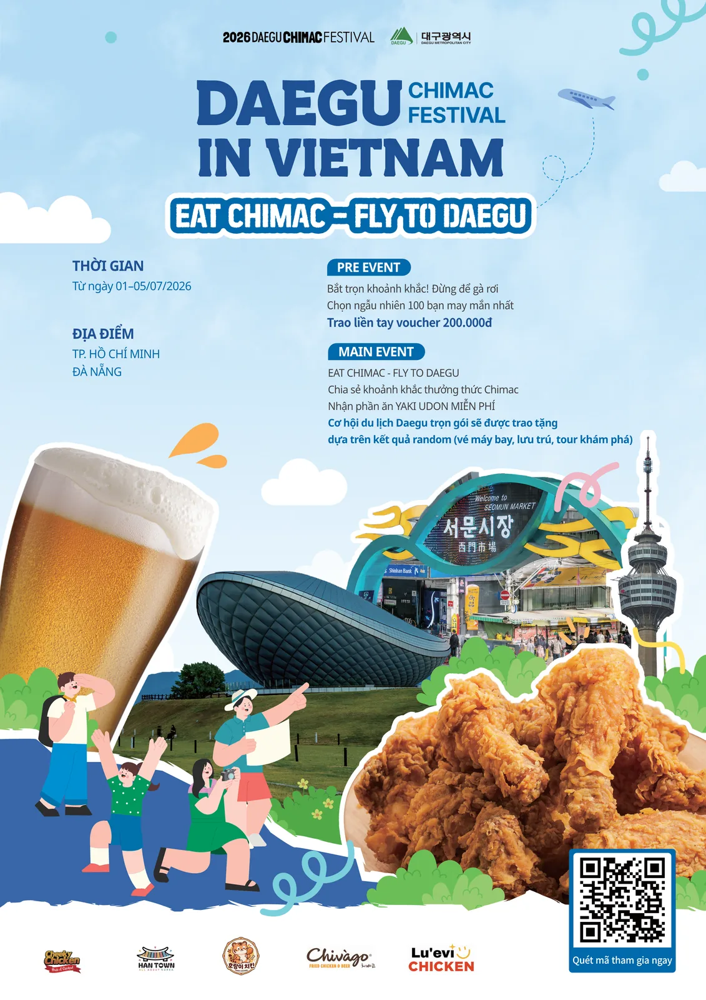

Results
성과
약 500명
사전·메인 이벤트 직접 참여
약 102,000건
SNS 검색·노출 (페이스북·인스타그램·스레드)
5개사 9개 매장
호치민·다낭 참여 매장
출처: 대구광역시 호치민사무소 발표 기준
대한민국 대표 여름 축제인 대구치맥페스티벌의 베트남 진출 시범사업입니다.
축제를 그대로 옮기는 대신, 베트남 식문화에 맞춰 프로그램을 다시 설계했습니다.
| 기간 | 2026. 7. 1 (수) ~ 7. 5 (일)종료 |
|---|---|
| 장소 | 베트남 호치민시·다낭시 — 한국 치킨 브랜드 5개사 9개 매장 |
| 주최 | 대구광역시 호치민사무소 |
| 수행 | 주식회사 퍼스트마케팅컴퍼니 (KFESTA) |
| 협력 브랜드 | Cheeky Chicken · Han Town · 호랑이치킨 · Chivago · Lu'evi Chicken |
베트남 소비자가 치킨을 먹을 때 면 요리를 곁들이는 '치면(치킨+면)' 경향에 주목했습니다. 행사 기간 동안 참여 매장에서 치킨을 주문한 고객에게 대구 대표 10미 중 하나인 야끼우동을 무료로 제공해, 익숙한 식문화를 매개로 대구의 먹거리를 자연스럽게 알렸습니다.
SNS 챌린지 참여자 중 100명을 추첨해 20만 동 상당의 치킨 바우처를 증정하며 행사 시작 전 관심을 모았습니다.
치맥과 야끼우동을 즐기는 모습을 개인 SNS에 공유하면 추첨을 통해 항공권·숙박·투어가 포함된 대구 여행 패키지를 증정했습니다. 한국어학과 학생과 현지 청년층이 자발적으로 행사를 확산하는 구조를 만들었습니다.

출처: 대구광역시 호치민사무소 발표 기준
호치민·다낭 참여 매장 현장 — 치바고(1군·2군·7군·10군·푸뉴언), 호랑이치킨 외
2026 대구메이드 K-Festa 베트남 수출상담회 참가기업 모집
접수 2026. 8. 17.(월) ~ 9. 20.(일)